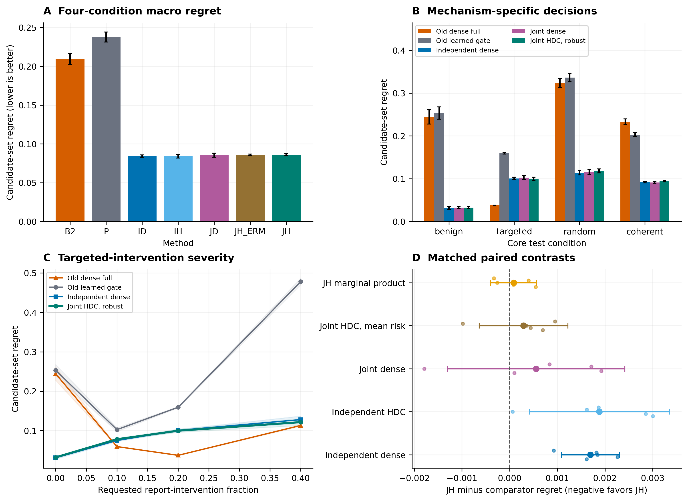
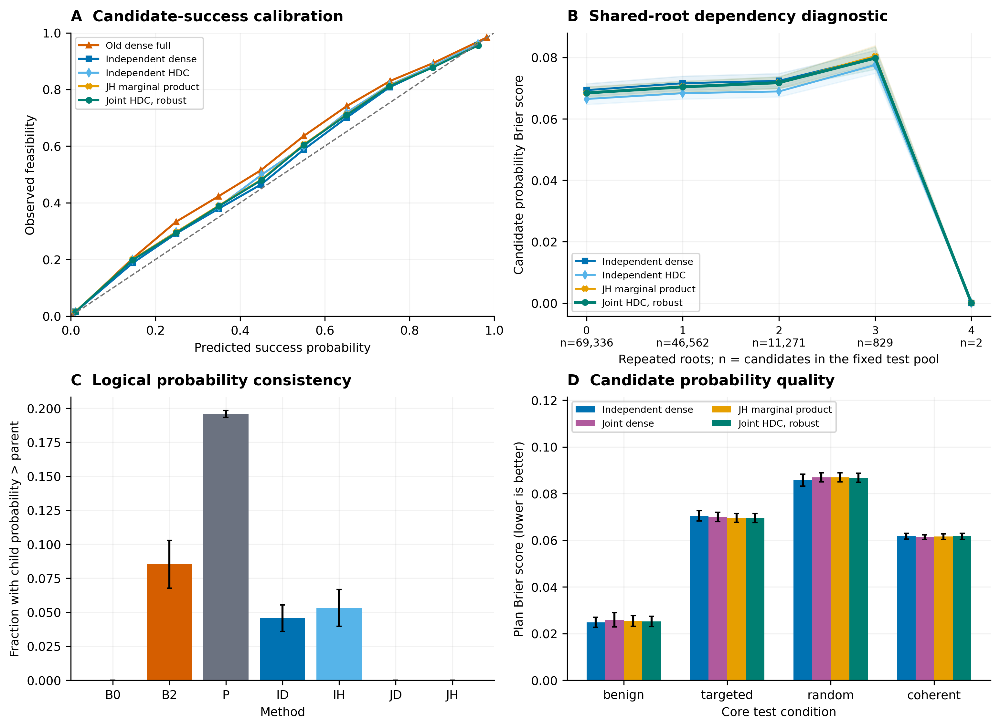
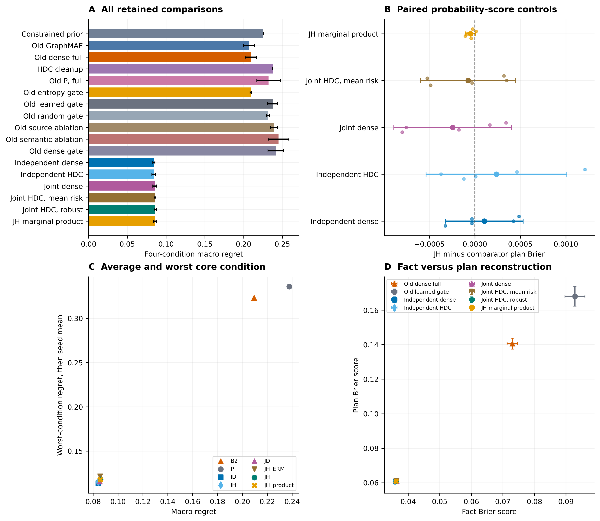
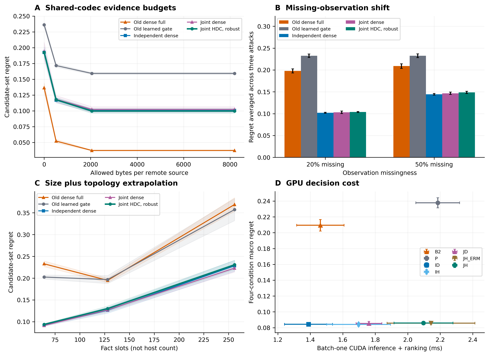
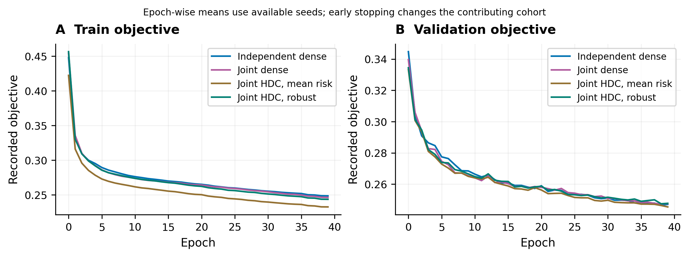
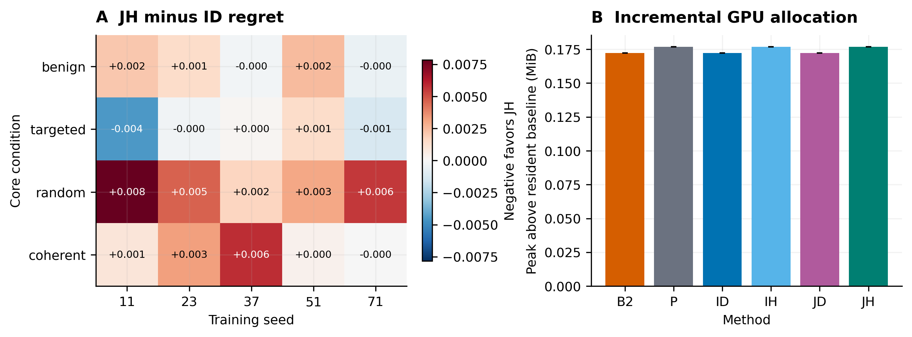

Four empirical figures plus two additional supplemental figures. Bands and error bars are 95% training-seed t intervals, conditional on the shared fresh test scenarios. Main comparisons use five seeds and equal condition weights.
Three-page supplement · Results and inference limits · Preserved first-study figures

Four-condition macro averages, mechanism-specific regret, severity sensitivity, and paired seed effects. Fresh test worlds are shared by every model; old checkpoints are reevaluated without retraining.
Vector PDF · Provenance
Actual candidate-success probabilities, shared-root diagnostics, and plan Brier scores. Root-duplication bins show candidate counts in the fixed test pool; the final bin has only two candidates, not ten independent cases across five seeds. Reliability curves pool candidate predictions across seeds; this does not make reused worlds independent. The violation metric is the fraction of fact slots whose marginal exceeds the parent marginal by more than 1e-6. JH_product uses the same checkpoint with marginal-product scoring, isolating the inference equation.
Vector PDF · Provenance
All methods remain visible. ID controls mixed training data and full regeneration; JD controls representation; JH_ERM controls the group-risk objective. Primary inference is JH versus ID, not old P versus JH.
Vector PDF · Provenance
Common sparse report transport, additional missing observations, size plus topology shift, and measured CUDA inference cost. Full regeneration has no fixed six-fact repair constraint; CUDA timing excludes host I/O.
Vector PDF · Provenance
Vector PDF · Provenance
Vector PDF · Provenance